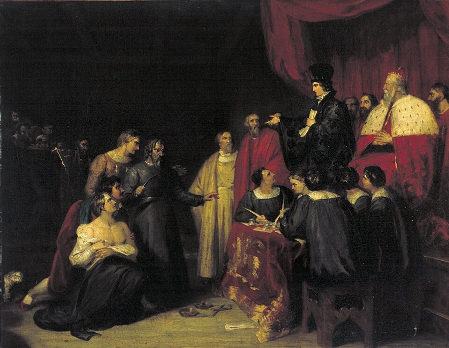
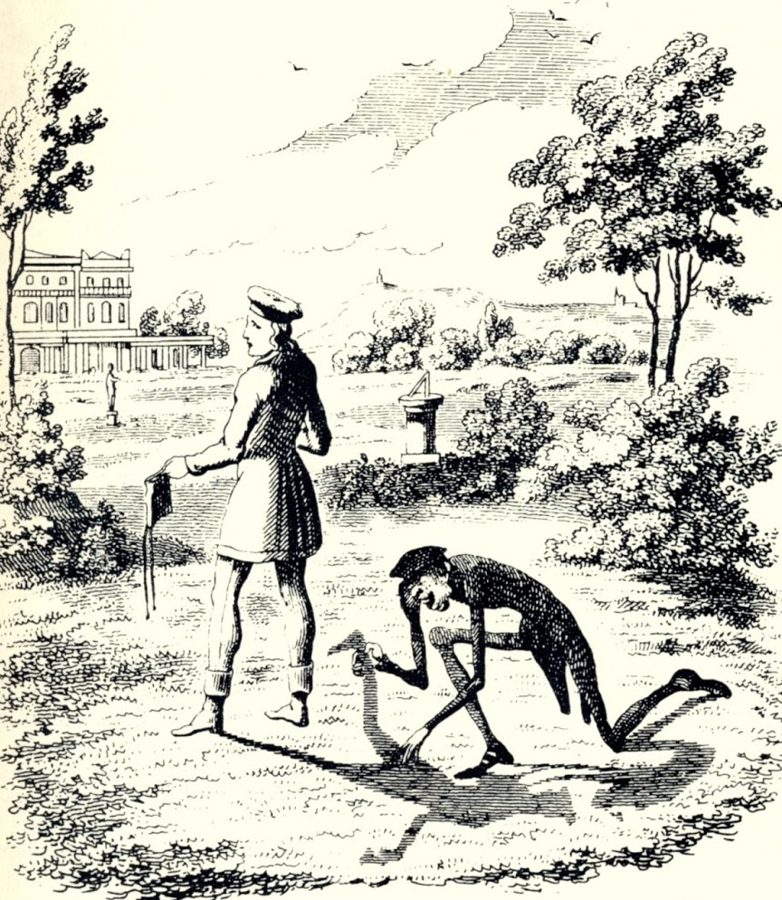
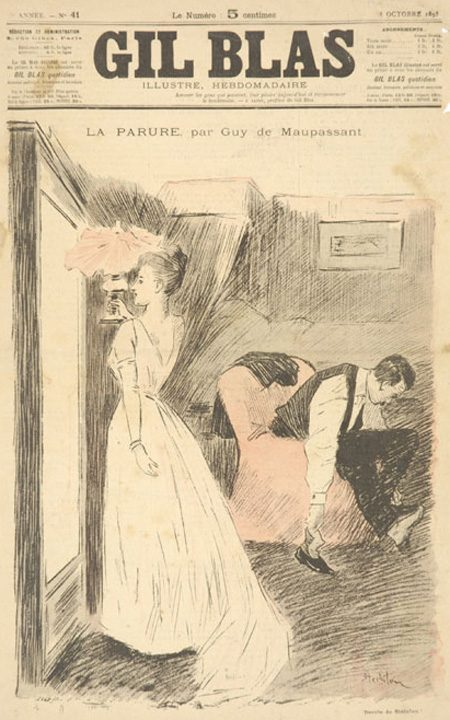

这一页在做什么
第 9 章换了写法：不再讲概念，一节讲一两个故事，每个故事里都有一个逼近的期限。这一页是前四节：《一千零一夜》里靠讲故事推迟死期的商人和山鲁佐德，《威尼斯商人》里三个月为期的一磅肉，席勒民谣里三天之内必须赶回的刺客，沙米索笔下和魔鬼约定「一年零一天」的施莱米尔，最后是福楼拜和莫泊桑笔下被债务期限拖住的两个女人。读的时候抓两条线：每个期限是谁定的、有多长；人怎样从期限下脱身，或者脱不了身。
法国画家 Godefroid 画的山鲁佐德和国王山鲁亚尔，约 1842 年。山鲁佐德每夜给国王讲故事，讲到天亮就停在最要紧的地方。Marie-Éléonore Godefroid，公有领域，维基共享资源
读之前：这一页在全书的哪里
第 8 章把期限（Frist ）当概念来讲：钟、历法、记事本、法律条文，最后到海德格尔，人的一生本身就是一段以死亡为终点的期限。第 9 章不再讲道理，十三节都讲故事，第 2 段说了为什么。这一页是前四节。施莱米尔和魔鬼争的是「一年零一天」怎么数；第 5 章开头讲待客三天，也问过同一类问题：头尾两天算不算（见第 5 章 ）。
同样被期限逼到死亡边上，为什么有人躲得过去、有人躲不过去？作者为什么说这种压力只有故事讲得清？
读的时候带着这几个问题。不用先找答案，读完回来对照「检查一下理解」。
商人和山鲁佐德都靠讲故事活下来。作者说讲故事这门艺术和哪一种时间连在一起？《威尼斯商人》里为什么没有人这样得救？§1
作者对席勒这首民谣有贬有褒，贬在哪里，褒在哪里？§2
施莱米尔和灰衣人对「一年零一天」各怎么数？差出来的那一天对施莱米尔意味着什么？§3
爱玛和马蒂尔德都欠了债，期限在两个人身上收场有什么不同？§4
这一页的路线
第 9 章没有导论，只用第 1、2 段交代为什么改讲故事，接着就讲。§1 最长：先讲《一千零一夜》里一个小故事，再拉远到整部书的框架故事，花饰之后跳到莎士比亚，作者说是因为母题相近。§2 跟着席勒的民谣一节节往下走，中间夹着德文原诗的图；作者的评价放在开头和结尾两头。§3 讲沙米索，重心在一天之差的算法上。§4 是两部法国作品，福楼拜和莫泊桑之间又有一处花饰。四节之间没有过渡句，作者也很少下判断。读的时候留意每个故事的期限有多长、谁定的、怎样收场，这一页的线就在这里。
§1
§2
§3
§4
商人和魔鬼
山鲁佐德
威尼斯商人
人质
施莱米尔
包法利夫人
项链
到新年
每晚到天亮
三个月
三天
一年零一天
二十四小时
十年分期
讲故事
讲故事
法庭诡辩
准时赶到
散尽家财
服毒
还清
本站示意图。第一行是故事，按阅读顺序排；第二行是故事里那个期限有多长；第三行是期限下怎样收场。虚线是节的分界。商人和魔鬼的故事套在山鲁佐德的故事里。 作者落在哪： 作者在这几节里很少下判断。他在开头说，期限的压力用抽象概念说不清，只能靠故事讲；讲故事本身又是推迟期限的办法。对席勒的民谣，他先说算不上好诗，又承认它抓住了短时间的张力。
分节地图
这一页是原书第 9 章的第 1–4 节。粗体是这一节的主角；斜体是英文这一节开头的几个词，在电子书里搜它就能跳到那里；节里的转折用段号点出来。读完打个勾。
商人和魔鬼，山鲁佐德，夏洛克的一磅肉约 1700 词 Short deadlines that must be respected … 第 1、2 段是全章的总纲；第 10 段起换到《威尼斯商人》。 席勒《人质》：三天期限，一路阻碍约 900 词 Schiller's “Die Burgschaft” (“The Pledge:' … 作者的评价在第 13 段和第 32、33 段，中间跟着诗走。 沙米索：卖掉影子，一年零一天约 900 词 Charles Louis Adelaide Chamisso de Boncourt … 第 36 段讲合同分两步签，第 38 段是一天之差的争执。 爱玛的本票，马蒂尔德的项链约 1100 词 Flaubert's novel Madame Bovary (1857) is … 第 49 段起换到莫泊桑，两个都是借债和到期的故事。
先用中文过一遍：这一页的概念
作者常常一笔带过、默认你懂的概念，这里先从书外讲一遍：它从哪来，是什么意思。它在这一页起什么作用，看每块最后一句。讲过的概念都汇总在概念汇总 。
§1 框架故事 frame story（德文 Rahmenerzählung） 框架故事是在一个外层故事里，让人物讲出一串内层故事。外层交代为什么要讲、讲给谁听，内层才是主体。《一千零一夜》的外层是国王山鲁亚尔和山鲁佐德，内层的故事里又常有人物再讲故事，一层套一层；薄伽丘的《十日谈》、乔叟的《坎特伯雷故事集》也是这种结构。拿程序打比方，外层像每晚跑一次的主循环，内层故事是被调用的函数，函数里还能再调用函数。
在这一页： 第 6、7 段，作者从商人和魔鬼这个内层故事拉到外层，指出两层都是靠讲故事推迟死期。
§1 机械降神 deus ex machina 古希腊演悲剧时，剧场用一种起重装置（希腊文 mēchanē）把扮神的演员吊到台上，神一出场，纠缠不清的局面一句话就了结。拉丁文 deus ex machina 字面是「从机器里出来的神」。欧里庇得斯的戏常这样收尾；亚里士多德在《诗学》里批评过这种做法：结局应该从情节本身生出来，不该靠机器送来。后来这个词泛指任何从天而降、硬把故事扳回来的外力，好比测试跑不过，最后靠一行写死的特判让它通过。
在这一页： 第 12 段，作者说《威尼斯商人》里没人能靠讲故事救场，结局靠的是公爵这个「机械降神」。
§2 延宕 retarding elements（德文文论说 retardierendes Moment） 叙事和戏剧理论里，「延宕」指故事快到结局时故意插进来的阻碍：把结局往后推，让读者多悬一会儿心。德国作家弗赖塔格（Gustav Freytag）1863 年的《戏剧技巧》把五幕剧画成先升后降的金字塔，结局之前那一下「最后的紧张」就是这样一笔。追剧时主角眼看要赶到、偏偏堵在路上，进度条走到 99% 停住，都是同一个效果。它不等于拖沓：在期限故事里，每一处阻碍都要耗掉故事里的时间，期限才一步步逼近。
在这一页： 第 24 段，作者说席勒这位有经验的剧作家在民谣里放了几处延宕：大雨、强盗、烈日（第 24–28 段）。
§3 一年零一天 über Jahr und Tag（英文 a year and a day） 「一年零一天」是欧洲老法律里常见的期限。13 世纪的德意志法书《萨克森明镜》（Sachsenspiegel）里，它实际是一年六周三天：一年之外，再加上等下一次开庭的时间（法庭每六周开一次，一次开三天）。逃进城里的农奴住满「一年零一天」，原主人就不能再索回，这是常说的「城市空气使人自由」。英美普通法里也有「一年零一天」的规则。今天德语口语里，这个说法泛指「好长一段时间」。
交出影子 签下预约
…… 一年 ……
第十二个月最后一天 施莱米尔算的到期日
下个月第一天 灰衣人照字面来了
争执的那一天
再三天
更短
更短
本站示意图，照第 36–40 段画。施莱米尔把期限往最短里算，魔鬼照合同字面多等一天；后来的几次延期一次比一次短。 在这一页： 第 36 段，魔鬼和施莱米尔约定正约「一年零一天」后再签；第 38 段两人对这一天的算法不同。
§4 本票和到期日 promissory note，法文 échéance 本票是一张写明「某日付某人多少钱」的欠条，签了名就能转给别人。上面那个日子叫到期日，法文 échéance，本义是「落下来、轮到」。商人赊货给顾客，常让对方签一张远期本票；到期付不出，可以签一张新票换掉旧票，把利息加进本金，下一轮连利息一起计息，这就是利滚利（复利）。到期仍不付，持票人可以请法院执行，派执达员查封家产。好比信用卡只还最低额：期限一次次往后推，欠的数越滚越大。
在这一页： 第 41–43 段，爱玛用本票付账，借新还旧；第 52 段，卢瓦泽尔夫妇按期还利滚利的借款。
书里的人和作品
按在书里出现的顺序排，标题前是节号。作品只讲到读懂这一节需要的程度。
§1 《一千零一夜》和商人与魔鬼《一千零一夜》是用阿拉伯文流传的故事集，故事来自印度、波斯、阿拉伯等地，成书年代说法不一，书里也这样说。商人和魔鬼是山鲁佐德讲的头一个故事；注 1 说作者用的是 Enno Littmann 的德译本。书里说德文最早由 Voß 从法文转译、英文由 Burton 译出。书外的说法：18 世纪初就已有据 Galland 转译的德文本；英文最早是 1706 年起的无名氏转译本，Burton 的本子 1885–1888 年出版，是从阿拉伯文译的。
Galland Antoine Galland，1646–1715 法国东方学家，1704 年起出版《一千零一夜》的法译本，欧洲人从此读到这部书。第 5 段说他是东西方之间的大中介。
Voß Johann Heinrich Voß，1751–1826 德国诗人，以翻译荷马出名，1781–1785 年据 Galland 的法文本出过德文的《一千零一夜》。电子书里印成 Vo13。
Burton Richard Francis Burton，1821–1890 英国探险家、语言学家，1885–1888 年从阿拉伯文译出《一千零一夜》，以注释大胆出名。
§1 《威尼斯商人》莎士比亚的这部戏一般认为写于 1596–1597 年间，书里写约 1597。安东尼奥替朋友巴萨尼奥向犹太放贷人夏洛克借三千杜卡特，好让朋友去向富家女鲍西娅求婚；借约三个月为期，过期就割一磅肉。第四幕第一场是法庭戏：公爵派人去请帕多瓦的法学博士 Bellario，来的却是女扮男装、化名 Balthazar、拿着 Bellario 推荐信的鲍西娅，「肉可以割，一滴血也不许流」是她当庭说的。书里第 12 段把这一招归给公爵和他的法律顾问，没提鲍西娅。

英国画家 Frank Howard 约 1830 年画的《鲍西娅宣判》，第四幕第一场。穿黑袍指着的是扮成法学博士的鲍西娅，握刀的是夏洛克。Frank Howard，CC BY-SA 4.0，维基共享资源 §2 席勒和《人质》席勒（Friedrich Schiller，1759–1805）是剧作家，也写史书，1789 年起在耶拿大学教历史，所以第 18 段说他就连作为史学家也不关心刺杀的政治动机。《人质》（Die Bürgschaft，字面是「担保」）1798 年夏写成，1799 年刊在席勒自己编的《缪斯年鉴》上，共二十节，故事出自古罗马 Hyginus 的《传说集》。初版里刺客叫 Möros，1804 年的版本才改作 Damon；书里的英译和德文图用的都是 Damon 那一版。电子书的目录把诗名印成 Die Bilrgschaft，第 13 段印成 Die Burgschaft。
§3 沙米索和《彼得·施莱米尔奇遇》沙米索（Adelbert von Chamisso）生在法国香槟地区的贵族家庭，法国大革命时全家流亡普鲁士，他后来用德语写作，还随俄国的船环游世界当过博物学家。书里写他 1781–1837 年在世，一般记作 1838 年去世。《彼得·施莱米尔奇遇》书里说 1813 年写成，1814 年出版：年轻的施莱米尔把影子卖给一个穿灰外套的小个子，换来永远掏不空的钱袋，从此人人躲着这个没有影子的人。Schlemihl 在意第绪语里是「倒霉蛋」。这也是一份和魔鬼立的约，可以对照第 2 章的浮士德故事 。

英国画家 Cruikshank 为这篇小说画的插图（说明页标 1823 年）：灰衣人跪在草地上，把施莱米尔的影子从地上揭起来，施莱米尔手里提着换来的钱袋。George Cruikshank，公有领域，维基共享资源 §4 福楼拜《包法利夫人》福楼拜（Gustave Flaubert，1821–1880）的《包法利夫人》1856 年在《巴黎杂志》连载，1857 年出书，还因「有伤风化」吃过官司。爱玛嫁给乡村医生夏尔，嫌婚姻乏味，先后有两个情人。服饰商 Lheureux 一路赊货给她，让她签本票。第 47 段说她去求两个旧情人，还有一位先生要她拿身体换帮助：小说里这位是公证人。第 48 段末尾说福楼拜自己尝到砒霜味：他在 1866 年给朋友 Taine 的信里说过，写爱玛服毒时嘴里满是砒霜的味道。
§4 莫泊桑《项链》莫泊桑（Guy de Maupassant，1850–1893）的《项链》（La Parure）1884 年 2 月 17 日登在巴黎的《高卢人报》（Le Gaulois）上，书里没给年份。马蒂尔德·卢瓦泽尔嫁给教育部的小职员，向修道院学校的老同学借了一串钻石项链去赴部长的晚会，回家路上丢了。作者拿她和爱玛并排：两人都在修道院学校里学会了浪漫的梦想（第 49 段），只是这一回悲剧小一些，停在死亡之前。

1893 年 10 月巴黎《吉尔·布拉斯画报》刊出《项链》的那一期封面，Steinlen 画：一位穿白裙的女子站在镜前，一个男人在她身后弯腰找东西。Théophile Steinlen，公有领域，维基共享资源 图里的引文
下面这几段在你的电子书里是图片，长按查不了词，也搜不到。每块先说它在屏幕上的位置，再逐行给中文意思；行首的斜体是图里这一行开头的几个词，用来和图对上。古人的诗本站据原作的语言译，不从英译转译。
§2 第 15–17 段 · 席勒《人质》第一节 · 英译两张，德文原文一张在第 14 段末尾（…seized and condemned to death:）之后。前两张是英译，第三张是德文原诗，下面照德文逐行。
Zu Dionys, dem … 潜到暴君狄奥尼修斯身边的，Damon, den Dolch … 是达蒙，衣袍里藏着匕首；Ihn schlugen die … 差役把他捆了起来。“Was wolltest du … 「你拿匕首想干什么？说！」Entgegnet ihm finster … 那暴怒的人阴沉地回他一句。“Die Stadt vom … 「把城邦从暴君手里解放出来！」“Das sollst du … 「你要在十字架上为这话后悔。」
英译第 5 行把 der Wüterich 落实成「性急的青年」，第 18 段也照这个说法讲；德文只说「暴怒的人」，没有点名是谁。英译第 3 行的 pursuers（追兵），德文是 Häscher（抓人的差役）。
Häscher
第 3 行
（德文）差役，捕快
旧词，奉命抓人的人。in Bande schlagen 是「戴上镣铐」。
Wüterich
第 5 行
（德文）暴怒的人
来自 Wut（狂怒），带贬义，也常用来说残暴的统治者。英译把它当成刺客。
am Kreuze
第 7 行
（德文）在十字架上
古代地中海世界常用钉十字架处死犯人。结尾朋友差点被吊上去的就是这座十字架（第 33 段）。
§2 第 22–23 段 · 席勒《人质》里的两行 · 英译一张，德文原文一张在第 21 段末尾（…begin his return journey:）之后。前一张是英译，后一张是德文，下面照德文逐行。
Eilt heim mit … 怀着忧心，他急急往回赶，Damit er die … 免得误了期限。
德文 sorgend 是「操心、忧虑」，英译 heavy heart（沉重的心）说得重了一些。第 2 行的 Frist 就是第 8 章讲的期限。
heim
第 1 行
（德文）回去，回家
达蒙此刻是从家里往叙拉古赶。第 24 段作者说这个 heim 让人意外，大概指的是按期回去这件事。
Frist
第 2 行
（德文）期限
die Frist verfehlen 是「误了期限」。见
期限 。
§2 第 25–26 段 · 席勒《人质》里的两行 · 英译一张，德文原文一张在第 24 段末尾（…a symbol of rapidly passing time:）之后。前一张是英译，后一张是德文，下面照德文逐行。
Und Welle auf … 一浪接一浪地流散，Und Stunde an … 一个钟头接一个钟头地溜走。
德文两行的末字 zerrinnet、entrinnet 押韵，都从 rinnen（流）来：浪是流散，时间是溜走，水和时间用同一个词根连起来。英译 races by、runs out 没保住这一层。
zerrinnet / entrinnet
第 1 行
（德文）流散 / 溜走
前缀 zer- 是「散开」，ent- 是「脱离」。末尾的 -et 是诗里为了凑音节保留的老写法，今天写 zerrinnt、entrinnt。
§2 第 30–31 段 · 席勒《人质》快到结尾的两行 · 英译一张，德文原文一张在第 29 段末尾（…life hangs in the balance:）之后。前一张是英译，后一张是德文，下面照德文逐行。
“Mich, Henker!” ruft … 「刽子手，杀我吧！」他喊道，Da bin ich, … 「我来了，他是替我作保的人！」
erwürgen 字面是「掐死」，在旧德语里泛指杀死，英译 strangle 照字面译了。第 2 行德文是「我就是他为之作保的那个人」，英译 he is my pledge 把主语换了过来。gebürget 和第 1 行的 erwürget 押韵，又正好是诗题 Bürgschaft 的动词。
erwürget
第 1 行
（德文）杀死（我）
命令式，旧写法，今天写 erwürgt。
gebürget
第 2 行
（德文）作了担保
bürgen（担保）的过去分词，今天写 gebürgt。Bürge 是保人，Bürgschaft 是担保这件事。
词与短语
你用 Kindle，单个生词长按就能查，这里只收词典帮不上的：每个词都认识、合起来不懂的说法，学术腔，没翻译的外文，典故。斜体小字是原句里连续的几个词，错字照电子书原样，搜它就能跳到那里。图里的词在上面「图里的引文」里。
§1 商人和魔鬼，山鲁佐德，夏洛克的一磅肉
to the day and hour
… respected to the day and hour are …
一天一时都不差
to the day 是「恰好那一天」。全章的期限都是这种卡死在某一刻的期限。
irrevocably final deadline
… extended and now irrevocably final deadline, …
已经延过、再不能改的最后期限
irrevocably 是「不可撤回地」。对照第 2 章巴赫曼的 revocable time（可收回的时间）。
take comfort from the fact
We may take comfort from the fact …
让人宽慰的是
作者用的是 may：可以这样聊以自慰，不是断言。
grant a reprieve
… grant him a reprieve of a …
准予缓期
reprieve 在法律上专指死刑暂缓执行，是全章的关键词；第 9 节的节名就叫 Everyman's Last Reprieve。
set his affairs in order
… set his affairs in order at home …
料理后事
字面是「把事情理清」，在临死、远行的语境里就是安排身后的事。
be the warrant
Allah would be the warrant that he …
作担保
warrant 在这里是担保（人），不是逮捕令。商人请真主作保，和 §2 朋友作保是同一个母题。
deliver oneself up
… he delivered himself up to his …
自己送上门去，投案
deliver up 是「交出」，宾语是自己。
in nuce
… shows in nuce something that is …
（拉丁文）具体而微地
字面是「在果核里」。小故事里已经装着整部书的特点。
put off
… is repeatedly put off by means of …
推迟
不是「关掉」或「让人反感」。一次次往后推，正是这一章说的延期。
frame story
In the overarching frame story, this …
框架故事
见概念块「框架故事」。overarching 是「笼罩全体的」。
lie with
… after she has lain with the king, …
同床
文雅、带《圣经》味的说法。lain 是 lie 的过去分词。
bring out
… Shahrazad can bring out, instead of …
（把人）领出来给人看
她领出来的是三个儿子，不是又一个故事。
if it is a comedy
… comedy-if it is a comedy-the role …
如果它算喜剧的话
两个连字符其实是破折号。作者对它算不算喜剧存疑，第 11 段说它中途转入了悲剧的调子。
this devil
… the rich Jew Shylock (
这个魔鬼
剧中别人骂夏洛克的话（注 3 给了出处，第四幕第一场）。作者借它把夏洛克对上《一千零一夜》里的魔鬼。
court the rich heiress
… in order to court the rich heiress …
向富家女求婚
court 作动词是「追求、求婚」。
shift into a tragic register
… the comedy shifts into a tragic register.
转入悲剧的调子
register 本是音域，这里说文体、语气的档位。
lothario
… with a Christian lothario and takes …
浪荡子
来自英国剧作家 Nicholas Rowe 1703 年《美丽的忏悔者》里的勾引者 Lothario。剧中和杰西卡私奔的是罗兰佐。
not always equal to
… which is not always equal to the …
不总配得上
equal to 是「胜任、够得上」。作者顺手批评：结尾没能撑住前面掀起的情绪。
deus ex machina
… part of a dens ex machina.
（拉丁文）机械降神
电子书印成 dens。见概念块「机械降神」。
pettifogging
… advisors prepare pettifogging arguments so that …
抠字眼的，讼棍式的
贬义，专钻条文空子。作者对这场法庭戏的口气不客气。
simultaneously agree with and contradict
… can simultaneously agree with and contradict the …
既顺着他，又驳倒他
准许割肉是顺着，不许流血是驳倒，两样同时成立，这就是诡辩。
§2 席勒《人质》：三天期限，一路阻碍
Die Bürgschaft
1799) is a standard example of the …
（诗名）《人质》，字面是「担保」
诗名在这一句前面的引号里，电子书印成 Burgschaft。英译 The Pledge（抵押、保证）。
a fixture of
… used to be a fixture of the …
……里少不了的一项
fixture 本是房子里固定的装置，引申为固定节目。
it is hard to consider
… it is hard to consider this ballad …
很难把它算作
委婉的否定：作者认为它算不上好诗，只是说得客气。
would-be assassin
The wouldbe assassin, a noble youth …
没得手的刺客
would-be 是「想当而没当成的」。电子书少了连字符。
even as a historian
Strangely enough, even as a historian …
就连身为史学家
席勒在耶拿大学教过历史，写过《三十年战争史》。作者奇怪他不追问刺杀的政治动机。
living pledge
… as a living pledge and will …
活的抵押，人质
pledge 一般押的是东西，这里押的是朋友的命。
leave in the lurch
… leave his friend in the lurch …
撇下不管，见死不救
固定说法，lurch 在这里不是「摇晃」。
on temporary leave from death
… on temporary leave from death, hurries …
从死亡那里请了几天假
leave 是假期，像士兵休假。作者打趣：死刑犯也有假期，到期就得归队。
retarding elements
… built a few retarding elements into …
延宕的情节
见概念块「延宕」。
the deadline is still far off
… for the reader, the deadline is still …
（对读者来说）期限还远
达蒙已经在赶，可诗还长：读者知道中间还有好几节，结局不会马上来。
in the nick of time
In the nick of time, as the …
千钧一发之际，刚好赶上
nick 是刻痕，一说原指计时用的刻痕。作者加了 as the saying goes，表明是借来的俗话。
hang in the balance
… life hangs in the balance:
生死未卜
balance 是天平，两头还没分出轻重。
bring the naivete to
… difficult to bring to the ballad the …
怀着……那份天真去读
bring X to Y 是「带着 X 去看 Y」。宾语 the naivete 被挪到了句尾。
the cult of friendship
The cult of friendship at the end …
友谊崇拜
18 世纪后期德国文人之间流行把友谊奉为至高的情感，互通热烈的书信。作者说今天的读者已经隔得太远。
it cannot be denied
Yet it cannot be denied that this …
可也不能否认
让步的信号：前面贬了，这里开始说它的好处。
be discharged
… is discharged in a rewarding moment …
（积攒的情绪）释放出来
discharge 本义是卸货、放电。读者攒了一路的担心，到朋友得救那一刻一下放掉。
and probably not only in faroff Syracuse
… and probably not only in faroff Syracuse.
恐怕也不只是在遥远的叙拉古
句尾的一点暗示：那一代德国文学乐观地以为同情能化解暴君的怒气，言下之意，他们想的不只是古代的暴君。
§3 沙米索：卖掉影子，一年零一天
take new and dangerous measurements
… take new and dangerous measurements.
量出新的、危险的尺寸
接着前面的比喻：灰衣人像个穷裁缝，揭走影子就像给人量身。take measurements 本是裁缝量尺寸。
stitch the theme of time into the fabric
… skillfully stitches the theme of time into …
把时间这个主题缝进故事里
作者自己也接着用裁缝的比喻：stitch 是缝，fabric 是布料，也指故事的结构。
for the time being
… immortal soul, but-for the time being
暂时
平常的短语，在这里一语双关：期限还没到，所以「暂时」只要影子。连字符其实是破折号。
preliminary contract
… kind of preliminary contract, to be followed …
预约（先签的合同）
合同法用语：先约定将来再签正式合同，正约叫 main contract。作者说魔鬼像个老练的法学家。
über Jahr und Tag
(fiber Jahr and Tag; lit.,
（德文）一年零一天之后
电子书印成 fiber Jahr and Tag，应为 über Jahr und Tag。见概念块「一年零一天」。
with greater legalistic precision
… observing with greater legalistic precision the …
更抠合同的字眼
legalistic 带贬义：死守条文。
once and for all
… missed the deadline once and for all …
彻底地，再也挽回不了地
平常是「一劳永逸」，这里是「从此永远错过」。
eke out
… laboriously ekes out the remainder of …
勉强度过（余生）
eke out a living 是「勉强糊口」。
§4 爱玛的本票，马蒂尔德的项链
keep up her appearance
… to keep up her appearance in …
撑门面
keep up appearances 是「维持体面」。
fantaisies
… the little trifles (fantaisies) that an …
（法文）小玩意儿，奢侈小物
原义「幻想」，复数指不必要的饰物、零碎。
significant name
… with the significant name of
有寓意的名字
significant 在这里是「有含义的」，不是「重要的」。Lheureux 字面是「那个幸运的人」，作者说这名字 significant：赊货放债、步步收网的人叫「幸运」。
une fort longue échéance
… payment period (une fort longue echeance).
（法文）很长的付款期限
电子书丢了重音。见概念块「本票和到期日」。
trusting to luck
… which, trusting to luck, she inserts …
碰运气
trust to 是「指望」。她学来几个术语，胡乱往话里塞。
power of attorney
… full power of attorney over his …
委托书，授权
attorney 这里不是律师，是「代理人」。法文 procuration。
none too extensive
… the latter are none too extensive.
并不多
none too 是「一点也不太」，往轻里说：夏尔的家产其实很少。
tighten his deadline-period nets
… to tighten his deadline-period nets.
收紧他用期限织的网
deadline-period 是译者给德文 Frist 定的译法（见
期限 ）。
swallow one's pride
Emma swallows her pride and goes …
放下面子
把自尊「咽下去」。
lay their whole lives at her feet
… lay their whole lives at her …
愿为她献出一切
夸张的情话。作者接着说：钱一上桌，爱情就完了。
cancel all her deadlines
Death cancels all her deadlines.
死亡勾销了她所有的期限
cancel 是注销账目、取消约会的词，和第 9 段山鲁佐德的期限被 cancelled 呼应，一个是得救，一个是死。
la sérénité d'un devoir accompli
… She dies with the
（法文）尽了义务后的安详
紧跟在这几个词后面的引号里。福楼拜写的是爱玛服毒后回到家时的神情，读来是反讽。
stop just short of death
… and stops just short of death.
差一步就到死
stop short of 是「没走到……那一步」。
the least of their worries
… that is the least of their worries.
那是他们最不用愁的事
字面「最小的担忧」，意思是根本算不上事。
fall due
… installments that fall due one after …
（款项）到期
due 是「应付的」。fall 不是落下。
compound interest
… are paid with compound interest.
复利，利滚利
见概念块「本票和到期日」。
读不通的扫描错字：
… Johann Heinrich Vo13; in England, … Vo13 应为 Voß。句尾 Burton! 的感叹号多半是注号 2 识别错了（注 2 讲 Voß 的译本）。… their pre cise itinerary is hard … pre cise 是 precise（确切的）断开了。(fiber Jahr and Tag; lit., 应为 über Jahr und Tag。
读完：作者到底说了什么
读完这一页的几节再看。下面是作者在这几节里的论点，由本站按论点重新组织，不按原书的顺序；每条右上角是依据所在的段落，拿不准就回书里那几段再读一遍。
期限的压力说不清，只能讲出来 期限逼到眼前、后果难料时人承受的是什么，作者说很难用抽象概念描述，只有真实或虚构的叙事给得出可靠的消息。他又说可以聊以自慰：这类故事让人贴身体会期限的煎熬，也常常引向从最险处得救。
§1 第 2 段 讲故事本身就是推迟期限的办法 商人靠三位长老的故事、山鲁佐德靠每夜讲到最精彩处打住，一次次把死期往后推，直到彻底取消。作者说讲故事这门艺术本质上连着无限的时间。《威尼斯商人》里没有这样的人，安东尼奥靠的是法庭上的机械降神。
§1 第 6、9、12 段 席勒的民谣算不上好诗，却抓住了短时间的张力 作者说很难把它算作好诗，今天的读者也难有它要求的天真，它只是个美丽的童话。可他承认它有一股原始的力量：席勒凭写历史剧的本能，看出民谣最适合写短时段里的起伏。
§2 第 13、32、33 段 期限有多短，也看怎么数 沙米索让魔鬼先只要影子，正约「一年零一天」后才签。施莱米尔把期限数到最短，魔鬼照字面多等一天，争执的这一天成了他最难熬的一天。等他散尽家财，时间反倒不再短了。
§3 第 36、38、40 段 §4 多讲少评：债务的期限，一个通向死，一个通向苦役 爱玛借新还旧，期限的网越收越紧，最后二十四小时用砒霜了结，作者说死亡勾销了她所有的期限。马蒂尔德一家分期还利滚利的债，十年后守住了最后一个期限。作者的判断主要落在节名里：期限既是陷阱，也是苦役。
§4 第 43、48、52 段
合起来： 第 8 章讲期限是什么，这一页让期限落到人身上：期限有人定、有人守、有人延，也有人数错。作者很少评说，要读者跟着故事体会时间一点点变少。这一章后面九节还会换着花样讲下去。
值得停下来的句子
In this case, only narrative can provide reliable information, drawn from real or from fictive sources.— §1 第 2 段。本站译：在这件事上，只有叙事给得出可靠的消息，无论取自真实还是虚构。
这是第 9 章的总纲。In this case 指上一句说的：期限的压力很难用抽象概念描述。reliable information 本是新闻、学术的说法，作者偏把它给了小说和民间故事；drawn from real or from fictive sources 又把真假两种来源并列：虚构的故事在这里也算数。这一章十三节全是故事，理由就在这一句。
Thus Peter Schlemihl suddenly finds himself a millionaire in money but a beggar in time.— §3 第 36 段。本站译：于是彼得·施莱米尔忽然发现，自己在钱上是百万富翁，在时间上是乞丐。
一句对仗：millionaire 对 beggar，in money 对 in time。finds himself 是「发觉自己处在某种境地」。本站的读法：这句话和「时间就是金钱 」唱反调，钱袋掏不空，时间却越过越少，钱换不来时间。
检查一下理解
先在心里答，再点开。答错的那题，回书里把对应那一节再读一遍。
1.（§1）三位长老怎样救下商人？这个小故事和山鲁佐德的故事是什么关系？ 他们和魔鬼打赌，每人讲一个故事，讲得魔鬼满意，就换走商人三分之一的血。这个故事是山鲁佐德讲给国王听的：小故事套在大故事里，两层都是靠讲故事推迟死期。
2.（§1）书里说《威尼斯商人》里谁扮演了「机械降神」？剧本里当庭说出那条妙计的是谁？ 书里说是公爵，他让法律顾问准备诡辩：肉可以割，一滴血也不许流。剧本里说出这一条的是女扮男装、冒充法学博士的鲍西娅。
3.（§1）作者为什么说这部戏「如果它算喜剧的话」？ 夏洛克丢了女儿和钱之后，戏转入悲剧的调子，玩笑立的借约变得要命。结尾夏洛克被当成木偶嘲弄，作者说当时的基督徒观众能从中取乐，那时也许还不像今天这样清楚，轻巧的话会很快变得要命。
4.（§2）席勒为什么让达蒙一路碰上大雨、强盗和烈日？ 这是剧作家放进民谣的延宕：每一处阻碍都耗掉时间，期限一步步逼近，读者的担心越积越多，到最后几分钟、朋友快被吊上十字架时才一下释放。
5.（§2）作者对这首民谣是褒是贬？ 两样都有。贬的是：难算好诗，今天的读者没有它要求的天真，它只是美丽的童话。褒的是：它有原始的力量，席勒看出民谣最适合写短时段的起伏。
6.（§3）施莱米尔和灰衣人对「一年零一天」怎么数得不一样？ 施莱米尔把期限数到最短，以为第十二个月最后一天就到期；魔鬼照合同字面，满一年零一天才来，晚了一天。施莱米尔白白苦等的这一天，成了他最难熬的一天。
7.（§4）莫泊桑的故事最后揭开了什么？ 那位朋友说，当年借给马蒂尔德的项链不是真钻石，是不值钱的仿制品。马蒂尔德十年守着一个个还款期限，还的是一笔本来不必欠这么多的债。
用一句话说这一页，写给一个没读过的人。
想一想：你有没有被一个期限推着走的经历？期限越近，时间过得越快还是越慢？你算期限的时候，像施莱米尔那样往最短里算，还是像灰衣人那样照字面一天不差？
精彩回顾
读过又忘了，从这里想起来。挑的是这一页最值得记住的人、说法和比喻，不按原书顺序；每条后面是节号，想细看就回书里那一节。全书各页的这一节都收在全书回顾 。
一句话： 第 9 章改讲故事：作者说期限的压力只有叙事说得清，讲故事本身也能推迟死期；山鲁佐德、达蒙、施莱米尔、爱玛和马蒂尔德各有一个逼近的期限。
一千零一夜 山鲁佐德每夜讲到最精彩处停下，国王一次次推迟行刑。一千零一夜后，她领出三个儿子，死期彻底取消。作者说讲故事连着无限的时间。
§1 一磅肉，一滴血 安东尼奥借三千杜卡特，三个月为期，逾期割一磅肉。法庭上的诡辩救了他：肉可以割，一滴血也不许流。作者叫它机械降神。
§1 三天赶回 达蒙刺杀暴君未遂，求三天回家嫁妹妹，朋友留下作保。大雨、强盗、烈日一路耽搁，他在朋友上十字架前赶到。
§2 时间上的乞丐 施莱米尔把影子卖给灰衣人，换来掏不空的钱袋，却成了时间上的乞丐。他把「一年零一天」少数了一天，白白熬过最难熬的一天。
§3 假钻石 马蒂尔德丢了借来的项链，借钱买一串新的还回去，十年分期还清债务，最后才知道原来那串是假的。
§4